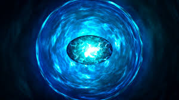
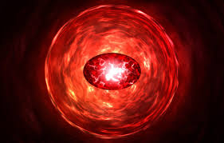

| name |
color |
info |
img |
| Камень пространства |
синий |
Камень пространства: даёт возможность перемещать как себя, так и всё окружающее в любую точку. |
 |
| Камень разума |
Жёлтый |
Камень разума: наделяет своего обладателя эмпатией, телепатией и телекинезом. |
.jpg) |
| Камень реальности |
Красный |
Камень реальности: изменяет реальность по усмотрению обладателя |
 |
| Камень силы |
Фиолетовый |
Камень силы: повышает силу, прочность и все остальные способности своего обладателя, а также питает остальные пять артефактов. |
 |
| Камень времени |
Зелёный |
Камень времени: позволяет путешествовать во времени, а также останавливать, замедлять и ускорять временной поток. Помимо этого, камень также замедляет старение своего обладателя. |
 |